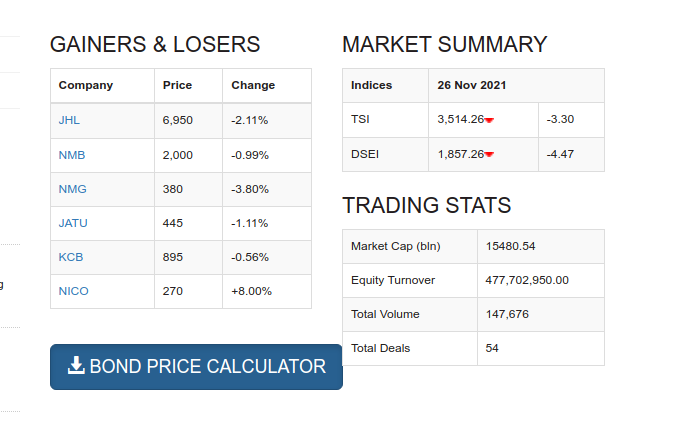
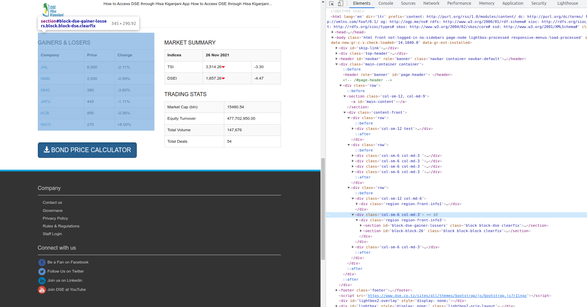

Web Scraping Demonstration
Our sample target site is a website with Dar es Salaam Stock Exchange data.
Lets say we were trying to extract data from the table labelled GAINERS & LOSERS

Table in the Html to extract
by pressing F12 we can inspect the html page elements so we know the identifiers of our table of interest.

Inspecting Html element
- Prepare Environment
Click for Code
#setupenvironment------------------------------------------------------
library(rvest)
library(httr)
library(purrr)
library(dplyr)
library(ggplot2)
library(DT)
#loadthehtml-----------------------------------------------------------
response<-GET("https://www.dse.co.tz/")
html<-content(response)
status_code(response)
## [1] 200- Extract Required Data
Click for Code
#extractanycompanynames--------------------------------------------
company<-html%>%
html_nodes(xpath='//table//tr/td/a')%>%
html_text()
#extractPrice----------------------------------------------------
price<-html%>%
html_nodes(xpath='//table//tr/td[a]')%>%
html_nodes(xpath='..')%>%
html_nodes(xpath='td[position()=2]')%>%
html_text()
#Extractingchange-------------------------------------------------------
change<-html%>%
html_nodes(xpath='//table//tr/td[a]')%>%
html_nodes(xpath='..')%>%
html_nodes(xpath='td[position()=3]')%>%
html_text()- Creating Data frame
Click for Code
#creatingdataframeforanalysis-----------------------------------------
gainers_losers<-data.frame(company=company,
price=price,
change=change)- Data Scrubbing
Click for Code
# clean data --------------------------------------------------------------
gainers_losers$company = as.factor(gainers_losers$company)
gainers_losers$price = as.numeric(gsub(",", "", gainers_losers$price))
gainers_losers$percent_change = as.numeric(gsub("%", "", gainers_losers$change))
gainers_losers <- gainers_losers %>%
mutate(pos = percent_change >= 0)- Analysis and Visualization
Let’s take a glimpse at the data in a table
Click for Code
datatable(gainers_losers)Now that we have our data in a format that is convenient for analysis we can get to the fun part, exploration!
- Sample Plot 1
Click for Code
# visualization of the data -----------------------------------------------
ggplot(gainers_losers, aes(price, reorder(company,price))) +
geom_segment(aes(yend = company),
xend = 0,
size = 7,
color = "#46843B") +
geom_point(size = 6,
color = "#46843B") +
scale_x_continuous("", limits = c(0,8000), position = "top") +
geom_vline(xintercept = mean(gainers_losers$price),
linetype="longdash",
color = "#A0512A",
size = 1.1) +
theme_minimal() +
theme(
legend.position="none",
axis.text = element_text(color = "black")
) +
labs(title = "Price of Stock",
subtitle = "- dashed line represents mean stock price for listed companies",
caption = "Source: Dar es Salaam Stock Exchange PLC") +
xlab("") +
ylab("")
- Sample Plot 2
Click for Code
ggplot(gainers_losers, aes(as.factor(company), percent_change, fill = pos)) +
geom_col(position = "identity", color = "black") +
scale_fill_manual(values = c("#A0512A", "#46843B"), guide = FALSE) +
theme_minimal() +
theme(
legend.position="none",
axis.text = element_text(color = "black")
) +
labs(title = "Percent Change in Stock Prices",
caption = "Source: Dar es Salaam Stock Exchange PLC") +
xlab("") +
ylab("change in %")